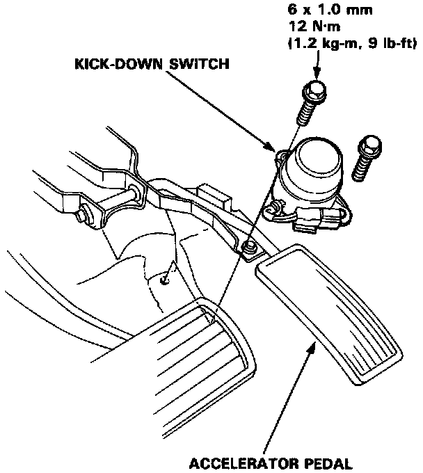

Operation CHARM
: Car repair manuals for everyone.
Home
>>
Acura
>>
1992
>>
Legend Coupe V6-3206cc 3.2L SOHC FI
>>
Repair and Diagnosis
>>
Transmission and Drivetrain
>>
Automatic Transmission/Transaxle
>>
Sensors and Switches - A/T
>>
Downshift Switch
>>
Service and Repair
Downshift Switch: Service and Repair

Replacement
1.
Remove the 6 mm bolts.
2.
Disconnect the connector.
3.
Replace the kick-down switch.